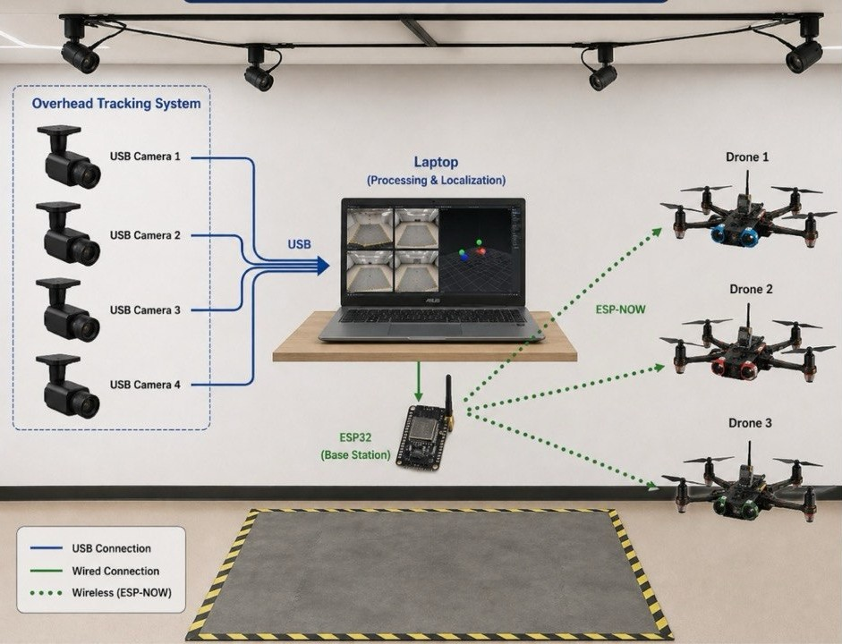
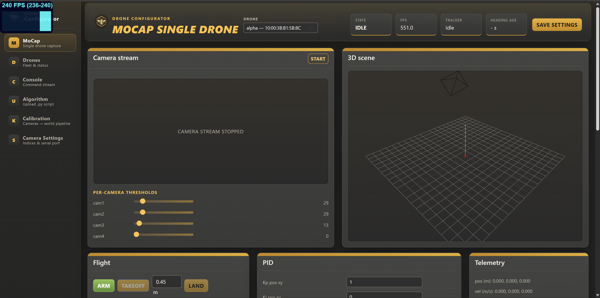
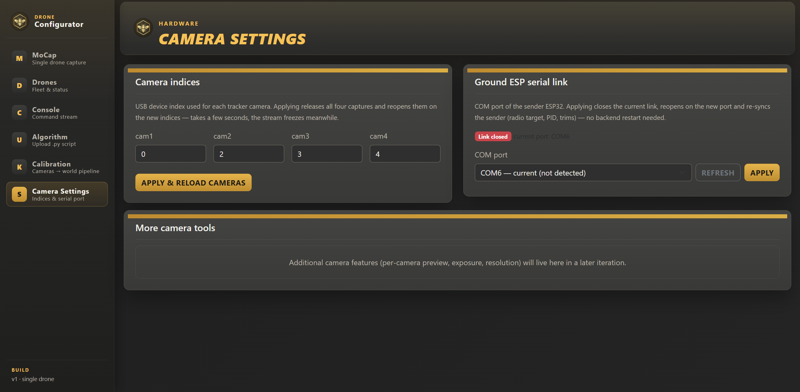
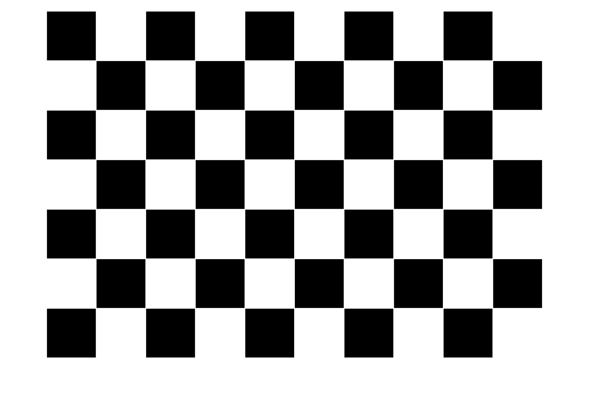
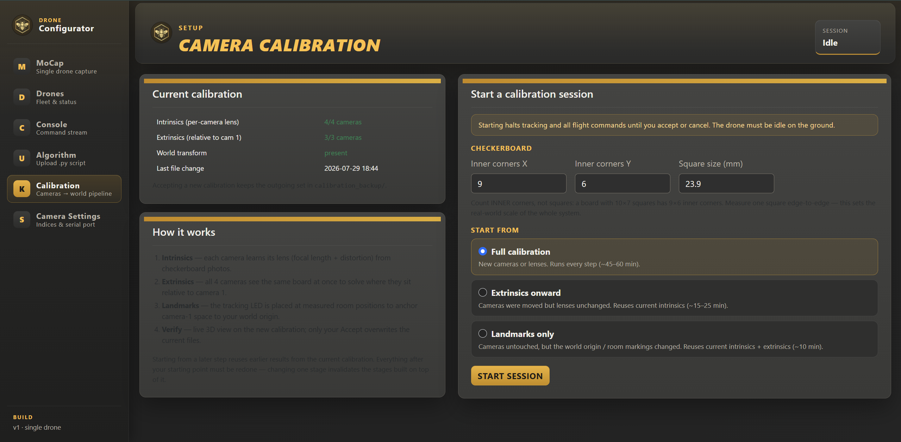
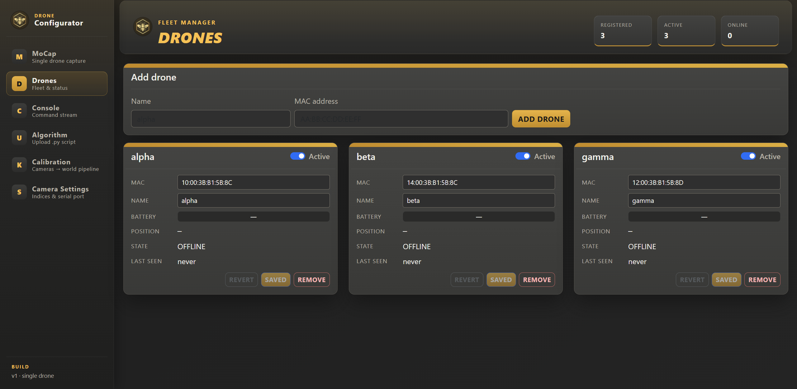
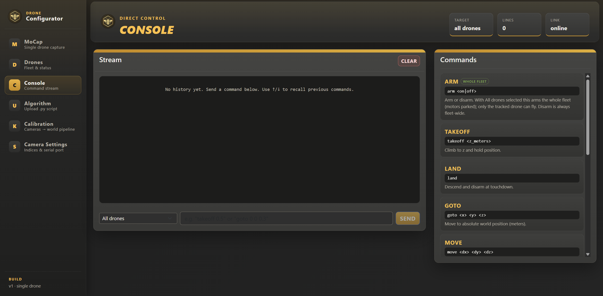
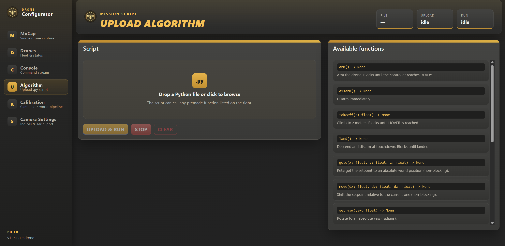

Overview
The Drone Swarm Research Platform is an indoor testbed for swarm-robotics experiments. The control application runs entirely on your computer: a local backend tracks drones through four USB cameras, talks to the swarm over an ESP32 radio link, and serves a browser-based control interface. No cloud connection is needed to fly.

docs/images/manual/arena.jpg to replace this placeholder
What you need
- A Windows or Ubuntu computer with four USB camera inputs available.
- The four tracker cameras mounted around the arena and plugged in.
- The ESP32 radio transceiver connected via USB (serial).
- One or more platform drones with charged batteries.
- A printed checkerboard pattern glued to a flat board for calibration (default 9 × 6 inner corners, 23.9 mm squares — see Calibration).
Typical workflow
- Install and launch the application — the UI opens in your browser.
- In Camera Settings, confirm camera indices and the serial port.
- Run Calibration (only needed when cameras move or on first setup).
- Register your drones in the Drones page.
- Fly manually from MoCap or the Console, or upload a Python mission in Upload.
Installation
Download the package for your operating system from the project's release page:
| Platform | Package | How to run |
|---|---|---|
| Windows | DroneSwarm-Windows-x64.zip |
Extract the ZIP, then double-click DroneSwarm.exe. |
| Ubuntu | DroneSwarm-Ubuntu-x64.tar.gz |
Extract, then run the DroneSwarm binary inside. |
The package is self-contained — you do not need Python, Node.js, or any libraries
installed. The Windows ZIP also contains sender_esp32.ino and
receiver_drone1.ino for programming the ESP32 boards.
dialout group:
sudo usermod -a -G dialout "$USER"Where your data lives
Calibration files, fleet registry, settings, and uploaded missions are stored in
%APPDATA%\DroneSwarm on Windows and ~/.config/DroneSwarm on Ubuntu.
Deleting this folder resets the application.
Optional environment variables
| Variable | Effect |
|---|---|
DRONE_BACKEND_PORT | Change the local port (default 3001). |
DRONE_SWARM_DATA_DIR | Override the writable data directory. |
DRONE_OPEN_BROWSER=false | Don't auto-open the browser on launch. |
DRONE_CAMERA_BACKEND | Force the camera backend: dshow, v4l2, or default. |
First Launch
- The download includes two Arduino
.inosketches: one for the ground ESP32 transmitter and one for the drone ESP32 receiver. - Before uploading the receiver sketch, check the MAC address of each ESP32 and add the required MAC address values to the receiver code.
- Use the Arduino IDE to upload the sender/transmitter sketch to the ground ESP32 and the receiver sketch to each drone ESP32.
- Plug in all four cameras and the ground ESP32 radio before starting the app.
- Run the application. The backend starts on
127.0.0.1:3001and your default browser opens the interface automatically. If it doesn't, browse tohttp://127.0.0.1:3001yourself. - Open Camera Settings and check that each of the four camera slots shows the right view, and that the correct serial port is selected.
- If this is a new arena or the cameras have been moved, run the calibration wizard before flying.

docs/images/manual/ui-overview.png to replace this placeholder
127.0.0.1; it is not
reachable from other machines on the network. Keep the terminal/console window it starts in
open while operating.Interface Tour
The sidebar switches between six pages. All pages stay live in the background — switching away doesn't stop streams, logs, or a running calibration.
Camera Settings
Camera indices
Each tracker camera (cam1–cam4) is bound to a USB device index.
If the wrong physical camera shows up in a slot, change its index and apply. Applying releases
all four captures and reopens them on the new indices — the stream freezes for a few seconds
while this happens.
Serial port
Select the port where the ESP32 radio is connected (e.g. COM5 on Windows,
/dev/ttyUSB0 on Ubuntu) and apply. The current port is shown even if the device is
unplugged at the moment.

docs/images/manual/camera-settings.png to replace this placeholder
Calibration
Calibration teaches the tracker where the cameras are and where the world origin is. Run it on first setup and whenever a camera is moved, refocused, or replaced.
Prepare the checkerboard first
Before starting the wizard, print the checkerboard pattern and paste it onto a flat, rigid surface — a clipboard, foam board, or piece of plywood works well. Any bending or waviness in the paper ruins the calibration accuracy, so glue it down completely flat with no bubbles or creases. Print at 100% scale (no "fit to page"), then measure one square with a ruler to confirm the size — you'll enter this measurement in the wizard.
Download the printable checkerboard PDF

docs/images/manual/checkerboard.jpg to replace this placeholder
The four steps
| Step | What it does |
|---|---|
| 1 · Intrinsics | Per-camera lens parameters. Show the checkerboard to each camera and capture views. |
| 2 · Extrinsics | Camera positions relative to each other. Capture the board where camera pairs both see it. |
| 3 · Landmarks | Sets the world origin and floor plane in the arena. |
| 4 · Verify | Test tracking quality and accept or re-run the result. |
Running the wizard
- Enter your checkerboard's inner-corner count and square size. Defaults match the standard board: 9 columns × 6 rows, 23.9 mm squares.
- Choose the starting step. You can start midway (e.g. only re-do Landmarks) — earlier steps are reused from the current calibration.
- During the two capture steps, press Space to capture the current frame while the Calibration page is visible.
- Watch the per-step log for capture counts and reprojection errors, then verify and accept.

docs/images/manual/calibration-wizard.png to replace this placeholder
Drone Fleet
Before a drone can be commanded it must be registered in the Drones page.
- Enter a friendly name and the drone's MAC address in the form
AA:BB:CC:DD:EE:FF(dashes also accepted). - Add the drone. It appears in the fleet list with live battery, position, state, and a "last seen" age.
- Toggle Active to include or exclude the drone from swarm commands and missions.
Battery badges are colour-coded: green above 60%, amber above 25%, red below. The fleet registry is saved on the backend, so it survives restarts.

docs/images/manual/drones.png to replace this placeholder
MoCap & Flight
The MoCap page is the main flight screen for a single drone. Select the drone at the top, then use the panels:
- Camera stream — live tracker view with detection overlay, plus tracker state, FPS, and heading age.
- 3D scene — the drone's tracked position and setpoints in the arena.
- Flight — Arm/Disarm, Takeoff to a target height (default 0.20 m), and Land. Takeoff is only enabled while armed.
- PID — live controller gains. Change values only in small steps and be ready to land; bad gains cause oscillation.
- Telemetry — position, heading (radians), battery, and controller state.

docs/images/manual/mocap.png to replace this placeholder
Console Commands
The Console sends typed commands to the selected target — one drone or the whole swarm. Every command is echoed in the history with its acknowledgement or error.
| Command | Description |
|---|---|
arm <on|off> | Arm or disarm the targeted drone(s). |
takeoff <z> | Climb to z metres and hold. z must be between 0 and 2.0, and the drone must be armed first. |
land | Descend and disarm at touchdown. |
goto <x> <y> <z> | Move to an absolute world position (metres). |
move <dx> <dy> <dz> | Shift the setpoint relative to the current one. |
yaw <radians> | Rotate to an absolute yaw angle. |
hover <seconds> | Hold the current setpoint for N seconds. |
trim <T> <R> <P> <Y> | Apply stick trim values (µs). |
pid <index> <value> | Update one PID gain (index 0–16); the full gain set is re-sent. |
estop | Emergency stop — immediate motor cut. |
ping | Status echo: state, position, battery. |

docs/images/manual/console.png to replace this placeholder
arm on
takeoff 0.5
goto 0.8 0.4 0.5
hover 3
landMission Scripts
The Upload page runs Python mission scripts against a restricted swarm API. Drag in a
.py file (only .py is accepted), review the preview, upload, and
run. Output from the script streams into the run log; a running mission can be stopped at any
time.
Scripts are validated before running: only calls to the functions below (plus
print/log) are permitted.
| Function | Description |
|---|---|
arm() | Arm the drone. Blocks until the controller reaches READY. |
disarm() | Disarm immediately. |
takeoff(z) | Climb to z metres. Blocks until HOVER is reached. |
land() | Descend and disarm at touchdown. Blocks until landed. |
goto(x, y, z) | Retarget to an absolute world position (non-blocking). |
move(dx, dy, dz) | Shift the setpoint relative to the current one (non-blocking). |
set_yaw(yaw) | Rotate to an absolute yaw (radians). |
wait(seconds) | Sleep — use after goto/move so the drone can get there. |
get_position() | Latest tracked world position in metres, or None. |
get_battery(drone_id) | Battery percentage by drone id, name, or MAC. |
get_state() | Controller state (IDLE, READY, TAKEOFF, HOVER, …). |
list_active() | Ids of all drones currently marked active. |
on_telemetry(callback) | Callback fired on every battery telemetry packet. |
log(*args) | Write a line to the run log. |
Example mission
arm()
takeoff(0.5)
goto(0.8, 0.4, 0.5)
wait(3)
log("position:", get_position())
land()
docs/images/manual/upload.png to replace this placeholder
Safety
- Emergency stop: type
estopin the Console for an immediate motor cut on the targeted drone(s). Preferlandwhen there is time for a controlled descent. - Keep hands, faces, and loose objects out of the arena while any drone is armed.
- Never leave a drone armed unattended — disarm as soon as flight is done.
- Takeoff height is capped at 2.0 m; stay well inside the calibrated tracking volume.
- Land promptly when a battery badge turns amber; don't fly a red battery.
- If tracking is lost mid-flight (frozen position, growing heading age), land or estop immediately.
Troubleshooting
| Symptom | What to check |
|---|---|
| Camera error / frozen stream | Go to Camera Settings and re-apply the camera indices — this releases and reloads all four cameras. If the error persists, close the application completely and restart it with the cameras plugged in. |
| UI doesn't open | Browse to http://127.0.0.1:3001 manually. If the port is taken, set
DRONE_BACKEND_PORT and restart. |
| Wrong / black camera views | Reassign indices in Camera Settings. On Windows try
DRONE_CAMERA_BACKEND=dshow; on Ubuntu v4l2. Ensure no other
app holds the cameras. |
| No serial connection | Pick the right port in Camera Settings. On Ubuntu, confirm your user is in the
dialout group (relog after adding). |
| Drone not responding | Check it's registered with the correct MAC, marked Active, and reporting battery
("last seen" recent). Send ping from the Console. |
takeoff rejected |
The drone must be armed first, and z must be in (0, 2.0] metres. |
| Poor tracking / drifting hover | Re-run calibration (start from Extrinsics if lenses are unchanged). Check lighting and that all four cameras see the arena centre. |
| Mission upload rejected | Only .py files are accepted, and only the documented API calls are
allowed in the script. |
| Reset everything | Quit the app and delete the data folder (%APPDATA%\DroneSwarm or
~/.config/DroneSwarm). Calibration and fleet must then be redone. |
Still stuck? Open an issue on the project repository — include your OS, the console output from the app, and what you were doing when it failed.